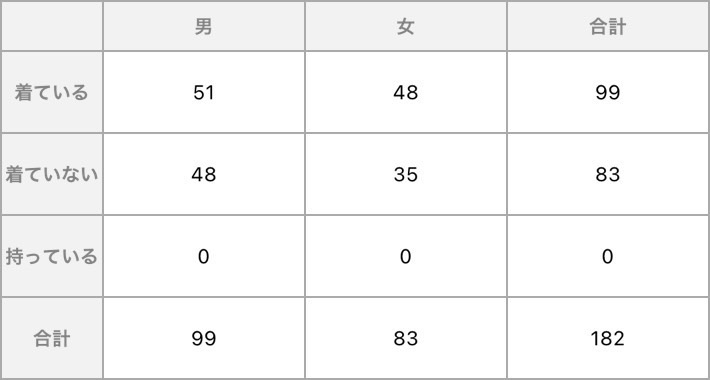
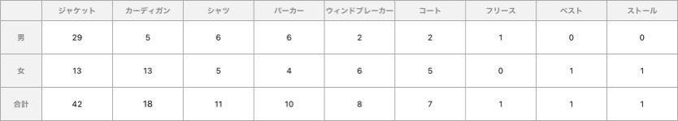
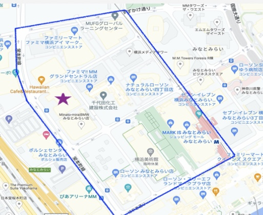

観察結果
観察結果から分かることは、まずアウターを着ている人と来ていない人がいるということである。
少し肌寒くなっていることもあり、もっと多くの人がアウターを着ているものだと思っていたので
驚きだった。以下が割合である。

下の表を見て貰えば分かるとおり、アウターの内訳は男女問わずジャケットが一番多く、続いて秋を代表する
かーディガン、シャツ、パーカー、ウインドブレイカー、コート、フリース,ベストの順に着ている人が多かった

また思ったのはマップが偏っているためもっと色々な地域の広範囲を調べたら統計が取れると思った
